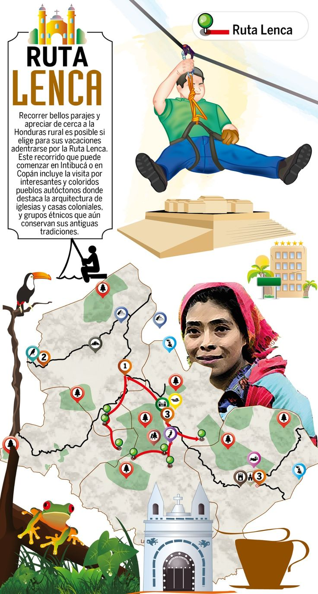
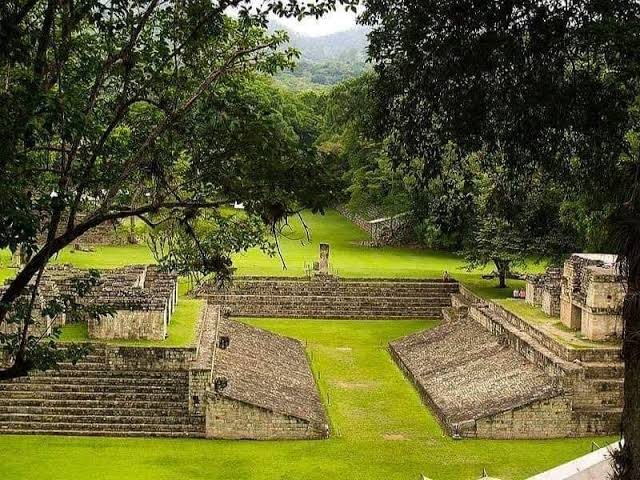
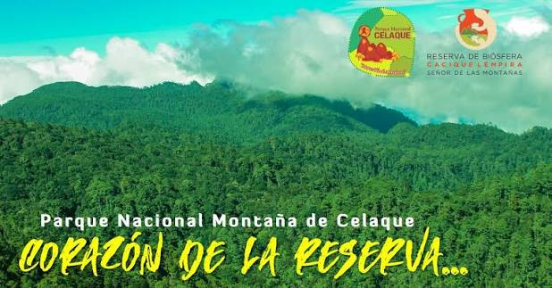
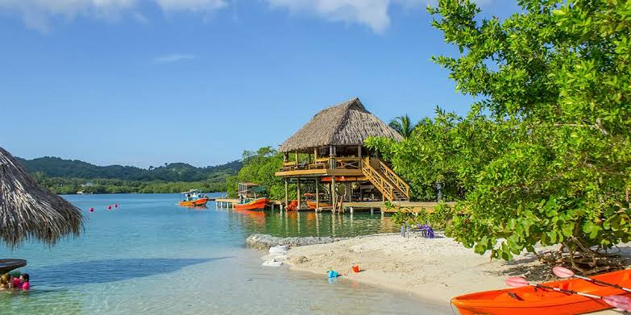

Explora la bella de la naturaleza y cultura houndreña de un solo clic
En esta seccion encontraras toda la informacion sobre los destinos y rutas culturales y naturales de Honduras, desde parque nacionales hasta rutas culturas que viajan al pasado, todos los destinos en una sola pagina.
Al final de la pagina encontraras una tabla con toda la informacion de forma resumida asi como los precios, tiempos, duracion y distancias de cada uno de los destinos que ofrecemos.
La Ruta Lenca es una de las experiencias más emocionantes que puedes tener en Honduras. Atraviesa los bosques tropicales y descubre las maravillas de la civilización lenca.

| Ciudades | Distancia | Altitud | Tiempo de Traslado | Precio |
|---|---|---|---|---|
| Tegucigalpa | 100 km | 1000 m | 1 dia | 3000 L |
| La Esperanza | 150 km | 1200 m | 2 dias | 5000 L |
| San Pedro Sula | 200 km | 1500 m | 3 dias | 7000 L |
| Gracias Lempira | 250 km | 1800 m | 4 dias | 9000 L |
| Santa Rosa de Copan | 300 km | 2000 m | 5 dias | 11000 L |
La Ruta Maya es un viaje fascinante a través de la historia y la cultura de la civilización maya. Explora antiguas ruinas, templos y sitios arqueológicos que revelan la grandeza de esta antigua civilización.

| Ciudades | Distancia | Altitud | Tiempo de Traslado | Precio |
|---|---|---|---|---|
| Copan Ruinas | 100 km | 500 m | 1 dia | 4000 L |
| La Entrada | 150 km | 600 m | 2 dias | 6000 L |
| Santa Rosa de Copan | 200 km | 700 m | 3 dias | 8000 L |
| Tegucigalpa | 250 km | 800 m | 4 dias | 10000 L |
| San Pedro Sula | 300 km | 900 m | 5 dias | 12000 L |
La Montaña Celaque es una de las cimas más altas de Honduras y ofrece paisajes espectaculares. Es un destino popular para senderistas y amantes de la naturaleza.

| Ciudades | Distancia | Altitud | Tiempo de Traslado | Precio |
|---|---|---|---|---|
| Tegucigalpa | 100 km | 2000 m | 1 dia | 5000 L |
| Gracias Lempira | 150 km | 2500 m | 2 dias | 7000 L |
| La Esperanza | 200 km | 3000 m | 3 dias | 9000 L |
| Santa Rosa de Copan | 250 km | 3500 m | 4 dias | 11000 L |
| San Pedro Sula | 300 km | 4000 m | 5 dias | 13000 L |
Islas de la Bahia son un archipiélago de islas y cayos ubicadas al norte del pais,siendo uno de los principales atractivos turisticos para extranjeros y gente del interior. Son conocidas por sus aguas cristalinas, playas paradisíacas y rica biodiversidad marina.

| Ciudades | Distancia | Altitud | Tiempo de Traslado | Precio |
|---|---|---|---|---|
| Tegucigalpa | 200 km | 2000 m | 1 dia | 5000 L |
| San Pedro Sula | 150 km | 0 m | 2 dias | 8000 L |
| La Ceiba | 100 km | 0 m | 3 dias | 10000 L |